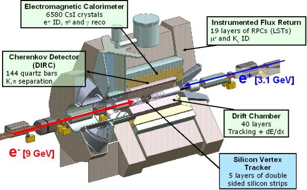

Physics >
HEP >
BaBar
BaBar, King of the Elephants

High Energy Physics at BaBar
I am currently working as a member the BaBar Collaboration at SLAC to gain a mastery of meson spectroscopy and a better understanding of Quantum Chromodynamics (QCD) and it's limitations. Specifically, I am interested in charmonium spectroscopy and the new meson states. Even though BaBar's raison d'être is to study CP violation, B mesons often decay into charmonium states. The sheer volume of these has allowed several new states with extremely small branching fractions to be observed. As an experimental physicist one also gets to play with nice toys, and in this regard I am serving as DIRC commissioner for BaBar and helping with the LST installation.
Useful Sites:
The BaBar Homepage
BaBar Pictures @ SLAC
The New Heavy Mesons - Eric Swanson
Recent Talks:
DOE Presentation 2007 - Physicists require funding and the DOE provides it. Currently, the DOE funds my work at BaBar, so I must report on how I have used their money to further our understanding of physics. (given 23 January 2007 via video feed to DOE representative Randy Johnson) I also produced a video version which it was decided not to use:
Part 1
Part 2.
Cherenkov Detectors in Particle Physics - Traces the history of Cherenkov detectors from the first ideas of Seguinot and Ypsilantis to RICH detector to the CRID to ACCs to the DIRC to prototypes of future detectors. Special emphasis is given to the DIRC detector at BaBar, with which the presenter has personal experience. (given to the Spaniergruppe at UT August 2006).
Charmonium Spectroscopy with BaBar - Potential models of the Charmonium spectrum have motivated the search for missing states at B-factories, however, discoveries there made have not always fit. This had led to much speculation about the new states. (given 16 November 2005 to the UT Particle Physics Seminar).
A more complete listing can be found
here.
Detector Stuph:
The DIRC
The LSTs
RPCs
SVT
PEP-II
Analysis:
My BAD comments
Return to the top.